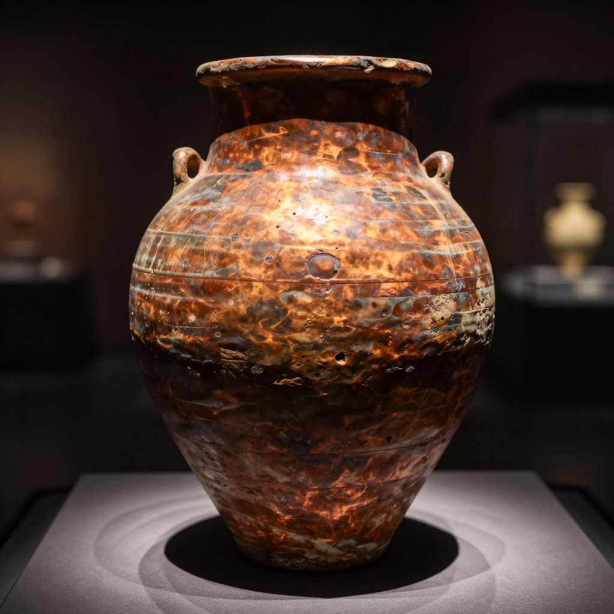
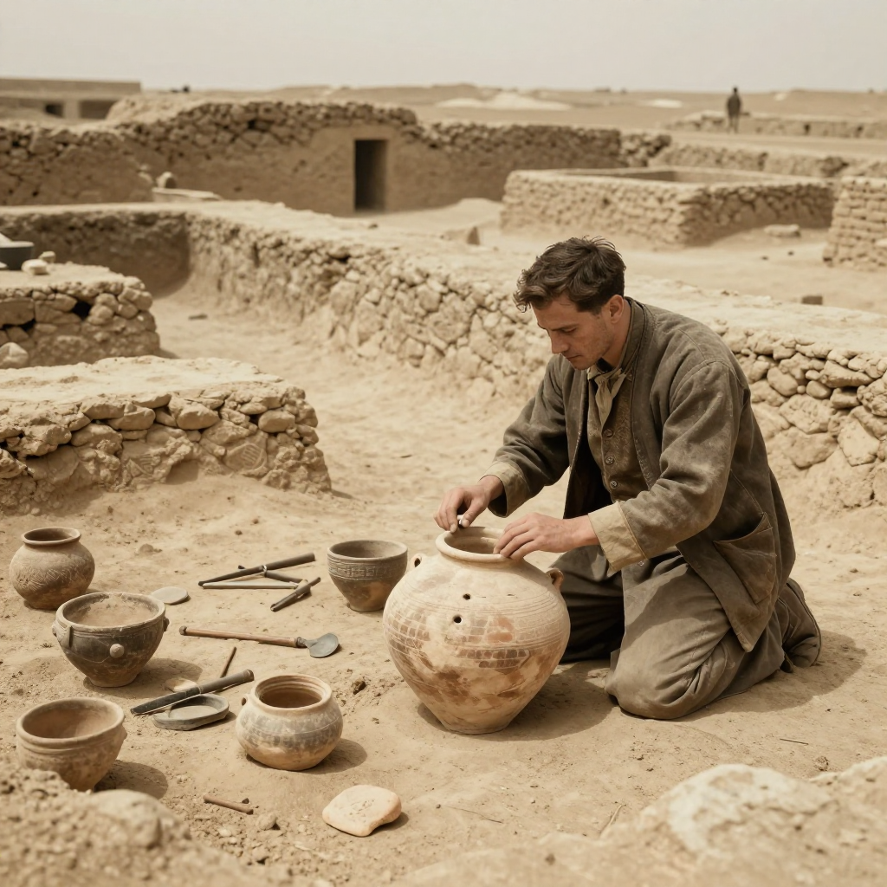

The Baghdad Battery

The Baghdad Battery - a 2,000-year-old jar that might have produced electricity!
Imagine finding an ancient battery from the time of the Roman Empire! In 1938, archaeologists discovered exactly that in modern-day Iraq - a clay jar that some believe could generate electricity over 1,500 years before Alessandro Volta invented the modern battery!
But here's the mystery: if ancient civilizations had electricity, why did this technology disappear for so many centuries? And what exactly did they use these batteries for?
The Strange Discovery
In 1938, German archaeologist Wilhelm König was working at the National Museum of Iraq in Baghdad when he made a puzzling discovery. Among the ancient artifacts was a small clay jar, about 5 inches tall, containing something very unusual inside.
Inside the jar was a copper cylinder, and inside that was an iron rod. The iron rod had been corroded by something acidic - maybe vinegar or wine. To König, this setup looked suspiciously like the components of an electric battery!
🔋 How It Works
Fill the jar with an acidic liquid like vinegar, and the copper and iron create a small electric current - just like a lemon battery you might make in science class!
How Old Is It?
Archaeologists examining artifacts from ancient Mesopotamia, the cradle of civilization.
The jar was found near artifacts from the Parthian period, which ruled the region from about 250 BCE to 250 CE. That makes this mysterious object roughly 2,000 years old!
But some scientists argue it might be even older. The style of the clay suggests it could date back to the Persian Empire, around 500 BCE. If true, that would make it over 2,500 years old!
⏳ Before Its Time
If this really is a battery, it predates the officially recognized invention of the battery by over 1,500 years!
Testing the Theory
Several scientists have built replicas of the Baghdad Battery to test if it actually works. The results? These replicas do produce a small electrical current - about 0.5 to 1 volt!

Modern reconstructions prove the jar can indeed produce electricity!
That's not enough power to light a lightbulb, but it's enough to give you a tiny shock. More importantly, it's enough electricity for some practical uses.
What Were They Used For?
If ancient people had batteries, what did they do with them? Scientists have proposed several fascinating theories:
- Electroplating: Using electricity to coat objects with a thin layer of gold or silver. Ancient jewelry might have been made this way!
- Medical treatment: Some ancient cultures used electric fish to treat pain. Could batteries have been used similarly?
- Religious rituals: Priests might have used hidden batteries to create mysterious "magical" effects in temples.
⚡ The Shocking Touch
Imagine an ancient priest touching a statue and giving a worshipper a tiny shock - it would seem like divine power!
The Skeptics' View
Not everyone believes the Baghdad Battery was actually a battery. Skeptics point out that:
- No wires or electrical devices were found with the jars
- It could have simply been a scroll storage container
- The acidic corrosion might be accidental, not intentional
However, no scrolls have ever been found in similar jars, and the design does seem perfectly suited for generating electricity.
The Mystery Continues
Unfortunately, the original Baghdad Battery was lost during looting at the Iraq Museum in 2003. Scientists can only study replicas and photographs now.
Whether it was really an ancient battery or just a simple storage jar, the Baghdad Battery reminds us that ancient civilizations may have been far more advanced than we give them credit for!
Clear Summary of the Evidence
The Baghdad Battery can sound dramatic, but the best way to understand it is to separate strong evidence from speculation. This article focuses on documented facts, source quality, and clear historical context.
In simple terms, this topic matters because it connects three ideas: what happened, how we know, and what remains uncertain. The core story in The Baghdad Battery is easier to follow when we use a timeline, define key terms, and point directly to sources.
The Baghdad Battery - a 2,000-year-old jar that might have produced electricity!
Background Timeline (What Happened, Step by Step)
- In 1938, archaeologists discovered exactly that in modern-day Iraq - a clay jar that some believe could generate electricity over 1,500 years before Alessandro Volta invented the modern battery!
- In 1938, German archaeologist Wilhelm König was working at the National Museum of Iraq in Baghdad when he made a puzzling discovery.
- Unfortunately, the original Baghdad Battery was lost during looting at the Iraq Museum in 2003.
- Experts continue revisiting The Baghdad Battery as better tools and stronger source checks become available.
- Experts continue revisiting The Baghdad Battery as better tools and stronger source checks become available.
This timeline view clarifies the sequence of events and helps test whether later claims fit documented records.
What We Know with Strong Support
Across discussions of The Baghdad Battery, several points are consistently supported by records or repeatable analysis:
- The Baghdad Battery - a 2,000-year-old jar that might have produced electricity!
- Imagine finding an ancient battery from the time of the Roman Empire!
- In 1938, archaeologists discovered exactly that in modern-day Iraq - a clay jar that some believe could generate electricity over 1,500 years before Alessandro Volta invented the modern battery!
- But here's the mystery: if ancient civilizations had electricity, why did this technology disappear for so many centuries?
These claims are stronger because they can be checked independently, rather than depending on one dramatic story or one unverified source.
How Researchers Study This Topic
Good history is a method, not just a story. When experts examine The Baghdad Battery, they usually combine source criticism, technical analysis, and contextual comparison.
- Archaeologists compare excavation reports, layer dates, and artifact context rather than relying on isolated objects.
- Museum catalogs and conservation notes help separate original features from later restoration changes.
- Scholars test competing interpretations against material evidence, inscriptions, and parallel finds from nearby sites.
Strong analysis starts by checking whether a claim is supported by verifiable evidence and independent review.
What Experts Still Debate
Even with good evidence, not every question has a final answer. In The Baghdad Battery, debates often continue because the surviving data is incomplete, damaged, or interpreted in different ways.
One common source of confusion is mixing the topics of The Strange Discovery, How Old Is It?, and Testing the Theory as if they prove the same thing. In reality, each part of the story may require different standards of proof.
A balanced approach is to keep uncertainty visible: we can confidently state what records show today, while leaving room for future evidence to update the picture.
Myths vs. Evidence
Myth: If a topic is mysterious, experts have no idea what happened.
Evidence-based view: Usually, experts know many parts of the story; the debate is about specific details.
Myth: The most dramatic explanation is probably true.
Evidence-based view: The best explanation is the one that matches the most verifiable facts with the fewest assumptions.
Myth: New claims automatically replace old research.
Evidence-based view: New claims become accepted only after careful checks, replication, and critical review.
Why This Story Still Matters Today
The Baghdad Battery is not only a curiosity from the past. It also provides a well-documented case for comparing primary records, later interpretations, and unresolved evidence questions.
This matters because careful source-checking reduces misinformation and keeps historical interpretation anchored to evidence.
Mini Glossary (Plain Language)
- Primary source: A record made close to the event, like a report, letter, inscription, or official document.
- Secondary source: A later explanation that interprets primary evidence.
- Hypothesis: A proposed explanation that must be tested against evidence.
- Consensus: The view most experts currently support, knowing it can change with new data.
- Context layer: The archaeological layer where an object is found, which helps date and interpret it.
- Provenance: The known history of where an artifact came from and who handled it over time.
Quick Recap
If you remember only three things about The Baghdad Battery, keep these: (1) there is real evidence worth studying, (2) some questions remain open, and (3) careful source-checking is the best path to reliable understanding.
That balance of curiosity and caution helps separate durable historical findings from speculation.
Additional context: research on this topic changes as new documents, field surveys, and technical methods become available. Current evidence supports the central narrative presented here, but finer points such as dating precision, attribution details, and event reconstruction can shift when stronger datasets appear. This is why historical writing compares primary records, cross-checks later interpretations, and updates claims when new peer-reviewed findings are published.
References & Further Reading
Editorial note: We cross-check claims across multiple independent sources. See our Editorial Policy.